전기기능사 (2007-09-16 기출문제)
1과목: 전기 이론
1. 다음 중 자기 차폐와 가장 관계가 깊은 것은?
- 상 자성체
- 강 자성체
- 반 자성체
- 비 투자율이 1인 자성체
(정답률: 54%)

2. 4[Ω], 6[Ω], 8[Ω]의 3개 저항을 병렬 접속할 때 합성저항은 약 몇 [Ω]인가?
- 1.8
- 2.5
- 3.6
- 4.5
(정답률: 78%)
3. 전류에 의한 자기장의 방향을 결정하는 법칙은?
- 앙페르의 오른나사법칙
- 플레밍의 오른손법칙
- 플레밍의 왼손법칙
- 렌츠의 법칙
(정답률: 72%)
4. 구리선의 길이를 2배, 반지름을 1/2로 할 때 저항은 몇 배가 되는가?
- 2
- 4
- 6
- 8
(정답률: 32%)
5. L[H], C[F]를 병렬로 결선하고 전압[V]를 가할 때 전류가 0이 되려면 주파수 f는 몇 [Hz] 이어야 하는가?
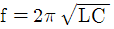
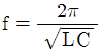
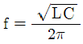
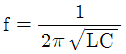
(정답률: 70%)
6. 2[C]의 전기량이 두 점 사이를 이동하여 48[J]의 일을 하였다면 이 두 점 사이의 전위차는 몇 [V]인가?
- 12
- 24
- 48
- 64
(정답률: 85%)
7. 강자성체의 투자율에 대한 설명이다. 옳은 것은?
- 투자율은 매질의 두께에 비례한다.
- 투자율은 자화력에 따라서 크기가 달라진다.
- 투자율이 큰 것은 자속이 통하기 어렵다.
- 투자율은 자속 밀도에 반비례한다.
(정답률: 39%)
8. 그림과 같은 회로에서 R-C 임피던스는?(오류 신고가 접수된 문제입니다. 반드시 정답과 해설을 확인하시기 바랍니다.)
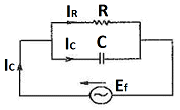
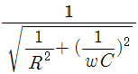
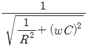
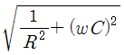
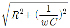
(정답률: 42%)
9. 다음은 연 축전지에 대한 설명이다. 옳지 않은 것은?
- 전해액은 황산을 물에 섞어서 비중을 1.2~1.3 정도로 하여 사용한다.
- 충전시 양극은 PbO로 되고 음극은 PbSO4로 된다.
- 방전전압의 한계는 1.8[V]로 하고 있다.
- 용량은 방전전류 × 방전시간으로 표시하고 있다.
(정답률: 57%)
10. 4[Wh]는 몇 [J]인가?
- 3600
- 4200
- 7200
- 14400
(정답률: 79%)
11. R=5[Ω], L=2[H]인 직렬 회로의 시상수는 몇 [sec]인가?
- 0.1
- 0.2
- 0.3
- 0.4
(정답률: 53%)
12. 평형 3상 교류 회로에서 △ 결선 할 때 선전류 Iι과 상전류 Ip와의 관계 중 옳은 것은?
- Iι = 3Ip
- Iι = 2Ip
- Iι = √3·Ip
- Iι = Ip
(정답률: 70%)
13. 다음 중 전자력 작용을 응용한 대표적인 것은?
- 전동기
- 전열기
- 축전기
- 전등
(정답률: 69%)
14. R=10[KΩ], C=5[μF]의 직렬 회로에 110[V]의 직류전압을 인가했을 때 시상수 {τ}는?
- 5[ms]
- 50[ms]
- 1[sec]
- 2[sec]
(정답률: 47%)
15. 최대값 10A인 교류 전류의 평균값은 약 몇 [A]인가?
- 0.2
- 0.5
- 3.14
- 6.37
(정답률: 65%)
16. 두 콘덴서 C1, C2를 직렬접속하고 양단에 V[V]의 전압을 가할 때 C1에 걸리는 전압은?
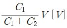
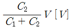
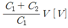
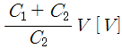
(정답률: 62%)
17. 전압 1.5[V], 내부저항 0.2[Ω]의 전지 5개를 직렬로 접속하면 전 전압은 몇 [V]인가?
- 0.2
- 1.0
- 5.7
- 7.5
(정답률: 80%)
18. 100[μF]의 콘덴서에 1000[V]의 전압을 가하여 충전한 뒤 저항을 통하여 방전시키면 저항에 발생하는 열량은 몇 [cal]인가?
- 3
- 5
- 12
- 43
(정답률: 59%)
19. 히스테리시스손은 최대 자속 밀도의 몇 승에 비례하는가?
- 1.1
- 1.6
- 2.6
- 3.2
(정답률: 63%)
20. 감은 횟수 200회의 코일 P와 300회의 코일 S를 가까이 놓고 P에 1[A]의 전류를 흘릴 때 S와 쇄교하는 자속이 4×10-4 [wb]이었다면 이들 코일 사이의 상호 인덕턴스는?
- 0.12[H]
- 0.12[mH]
- 1.2×10⁻4[H]
- 1.2×10⁻4[mH]
(정답률: 37%)
2과목: 전기 기기
21. 부흐홀쯔 계전기의 설치 위치로 가장 적당한 것은?
- 변압기 주 탱크 내부
- 콘서베이터 내부
- 변압기 고압측 부싱
- 변압기 주 탱크와 콘서베이터 사이
(정답률: 84%)
22. 동기기의 자기여자 현상의 방지법이 아닌 것은?
- 단락비 증대
- 리액턴스 접속
- 발전기 직렬연결
- 변압기 접속
(정답률: 40%)
23. 4극 60[Hz], 슬립 5[%]인 유도 전동기의 회전수는 몇 [rpm]인가?
- 1836
- 1710
- 1540
- 1200
(정답률: 71%)
24. 전기자 저항 0.1[Ω], 전기자 전류 104[A], 유도 기전력 110.4[V]인 직류 분권 발전기의 단자 전압은 몇 [V]인가?
- 98
- 100
- 102
- 1⑤
(정답률: 66%)
25. 효율 80[%], 출력 10[Kw] 일 때 입력은 몇 [Kw]인가?
- 7.5
- 10
- 12.5
- 20
(정답률: 61%)
26. 동기발전기의 권선을 분포권으로 하면 어떻게 되는가?
- 권선의 리액턴스가 커진다.
- 파형이 좋아진다.
- 난조를 방지한다.
- 집중권에 비하여 합성유도 기전력이 높아진다.
(정답률: 46%)
27. 일정 전압 및 일정 파형에서 주파수가 상승하면 변압기 철손은 어떻게 변하는가?
- 증가한다.
- 감소한다.
- 불변이다.
- 어떤 기간 동안 증가한다.
(정답률: 52%)
28. 직류기에서 보극을 두는 가장 주된 목적은?
- 기동 특성을 좋게 한다.
- 전기자 반작용을 크게 한다.
- 정류 작용을 돕고 전기자 반작용을 약화시킨다.
- 전기자 자속을 증가 시킨다.
(정답률: 62%)
29. 그림의 기호는?(오류 신고가 접수된 문제입니다. 반드시 정답과 해설을 확인하시기 바랍니다.)
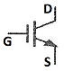
- SCR
- TRIAC
- IGBT
- GTO
(정답률: 49%)
30. 1차 권수 3000, 2차 권수 100인 변압기에서 이 변압기의 전압비는 얼마인가?
- 20
- 30
- 40
- 50
(정답률: 84%)
31. 변압기유가 구비해야 할 조건은?
- 절연 내력이 클 것
- 인화점이 낮을 것
- 응고점이 높을 것
- 비열이 작을 것
(정답률: 62%)
32. 반도체 사이리스터에 의한 전동기와 속도 제어 중 주파수 제어는?
- 초퍼제어
- 인버터제어
- 컨버터제어
- 브리지 정류제어
(정답률: 46%)
33. 3상 유도 전동기의 회전 방향을 바꾸기 위한 방법으로 가장 옳은 것은?
- △-Y 결선
- 전원의 주파수를 바꾼다.
- 전동기에 가해지는 3개의 단자 중 어느 2개의 단자를 서로 바꾸어 준다.
- 기동보상기를 사용한다.
(정답률: 80%)
34. 전압제어에 의한 속도 제어가 아닌 것은?
- 정지형 레너드식
- 일그너식
- 직병렬 제어
- 회생제어
(정답률: 53%)
35. 동기 발전기의 돌발 단락 전류를 주로 제한하는 것은?
- 권선 저항
- 동기 리액턴스
- 누설 리액턴스
- 역상 리액턴스
(정답률: 64%)
36. 6극 전기자 도체수 400, 매극 자속수 0.01[wb], 회전수 600[rpm]인 파권 직류기의 유기 기전력은 몇 [V]인가?
- 120
- 140
- 160
- 180
(정답률: 57%)
37. 다음 중 옥내에 시설하는 저압 전로와 대지 사이의 절연 저항 측정에 사용되는 계기는?
- 코올라시브리지
- 메거
- 어스테스터
- 마그넷벨
(정답률: 65%)
38. 단락비가 1.2인 동기발전기의 %동기 임피던스는 약 몇 [%]인가?
- 68
- 83
- 100
- 120
(정답률: 58%)
39. 2극 3600[rpm]인 동기발전기와 병렬 운전하려는 12극 발전기의 회전수는 몇 [rpm]인가?
- 600
- 1200
- 1800
- 3600
(정답률: 70%)
40. 다음 중 역률이 가장 좋은 단상 유도 전동기는?
- 세이딩 코일형
- 분상형 전동기
- 반발형 전동기
- 콘덴서형 전동기
(정답률: 49%)
3과목: 전기 설비
41. 분권 발전기는 잔류 자속에 의해서 잔류 전압을 만들고 이 때 여자 전류가 잔류 자속을 증가시키는 방향으로 흐르면, 여자 전류가 점차 증가하면서 단자 전압이 상승하게 된다. 이 현상을 무엇이라 하는가?
- 자기포화
- 여자 조절
- 보상 전압
- 전압 확립
(정답률: 37%)
42. 작업 면에서 천장까지의 높이가 3[m] 일 때 조명인 경우의 광원의 높이는 몇 [m]인가?
- 1
- 2
- 3
- 4
(정답률: 49%)
43. 금속관 공사에서 관을 박스 내에 고정 시킬 때 사용하는 것은?
- 부싱
- 로크너트
- 새들
- 커플링
(정답률: 61%)
44. 전선로의 종류가 아닌 것은?
- 옥측 전선로
- 지중 전선로
- 가공 전선로
- 산간 전선로
(정답률: 44%)
45. 셀룰로이드, 성냥, 석유류 등 기타 가연성 위험물질을 제조 또는 저장하는 장소에 시설해서는 안 되는 배선은?
- 애자사용배선
- 케이블배선
- 합성수지관배선
- 금속관배선
(정답률: 72%)
46. 홀더용 1종 케이블의 약호는?
- WCT
- WNCT
- WRCT
- WRNCT
(정답률: 39%)
47. 다음 중 단선의 브리타니아 직선 접속에 사용되는 것은?
- 조인트선
- 파라핀선
- 바인드선
- 에나멜선
(정답률: 63%)
48. 배전반 및 분전반의 설치장소로 적합하지 못한 것은?
- 전기회로를 쉽게 조작할 수 있는 장소
- 개폐기를 쉽게 조작할 수 있는 장소
- 안정된 장소
- 은폐된 장소
(정답률: 97%)
49. 다음 중 나전선 상호간 또는 나전선과 절연전선 접속시 접속부분의 전선의 세기는 일반적으로 어느 정도 유지해야 하는가?
- 80[%] 이상
- 70 [%]이상
- 60[%] 이상
- 50 [%]이상
(정답률: 63%)
50. 다음 심벌의 명칭은?
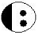
- 과전압계전기
- 환풍기
- 콘센트
- 룸에어콘
(정답률: 84%)
51. 주상 변압기의 고·저압 혼촉 방지를 위해 실시하는 2차측 접지공사는?(관련 규정 개정전 문제로 여기서는 기존 정답인 2번을 누르면 정답 처리됩니다. 자세한 내용은 해설을 참고하세요.)
- 제1종
- 제2종
- 제3종
- 특별 제3종
(정답률: 53%)
52. 가요 전선관에 사용되는 부속품이 아닌 것은?
- 스플릿 커플링
- 콤비네이션 커플링
- 앵글박스 커넥터
- 유니온 커플링
(정답률: 36%)
53. 2종 접지 공사의 저항값을 결정하는 가장 큰 요인은?(관련 규정 개정전 문제로 여기서는 기존 정답인 4번을 누르면 정답 처리됩니다. 자세한 내용은 해설을 참고하세요.)
- 변압기의 용량
- 고압 가공 전선로의 전선 연장
- 변압기 1차측에 넣는 퓨즈 용량
- 변압기 고압 또는 특고압측 전로의 1선 지락 전류의 암페어 수
(정답률: 56%)
54. 지선의 중간에 넣는 애자의 명칭은?
- 구형애자
- 곡핀애자
- 현수애자
- 핀애자
(정답률: 72%)
55. 가공 전선로의 지지물에 시설하는 지선의 안전율은 얼마이상이어야 하는가?
- 3.5
- 3.0
- 2.5
- 1.0
(정답률: 65%)
56. 가스 절연 개폐기나 가스 차단기에 사용되는 가스인 SF6의 성질이 아닌 것은?
- 연소하지 않는 성질이다.
- 색깔, 독성, 냄새가 없다.
- 절연유의 1/140로 가볍지만 공기보다 무겁다.
- 공기의 25배 정도로 절연내력이 낮다.
(정답률: 64%)
57. 다음 중 차단기를 시설해야 하는 곳으로 가장 적당한 것은?
- 다선식 전로의 중성선
- 제2종 접지 공사를 한 저압 가공 전로의 접지측 전선
- 고압에서 저압으로 변성하는 2차측 전압측 전선
- 접지공사의 접지선
(정답률: 61%)
58. 플로어 덕트공사의 설명 중 옳지 않은 것은?(관련 규정 개정전 문제로 여기서는 기존 정답인 4번을 누르면 정답 처리됩니다. 자세한 내용은 해설을 참고하세요.)
- 덕트 상호 및 덕트와 박스 또는 인출구와 접속은 견고하고 전기적으로 완전하게 접속하여야 한다.
- 덕트의 끝 부분을 막는다.
- 덕트 및 박스 기타 부속품은 물이 고이는 부분이 없도록 시설 하여야 한다.
- 플로어 덕트는 특별 제 3종 접지공사로 하여야 한다.
(정답률: 71%)
59. 금속관을 조영재에 따라서 시설하는 경우는 새들 또는 행거 등으로 견고하게 지지하고 그 간격을 몇 [m]이하로 하는 것이 가장 바람직한가?
- 2
- 3
- 4
- 5
(정답률: 49%)
60. 무대 무대마루 밑, 오케스트라 박스, 영사실, 기타 사람이나 무대 도구가 접촉할 우려가 있는 장소에 시설하는 저압옥내 배선, 전구선 또는 이동전선은 최고 사용전압이 몇 [V] 미만 이어야 하는가?
- 100
- 200
- 400
- 700
(정답률: 79%)